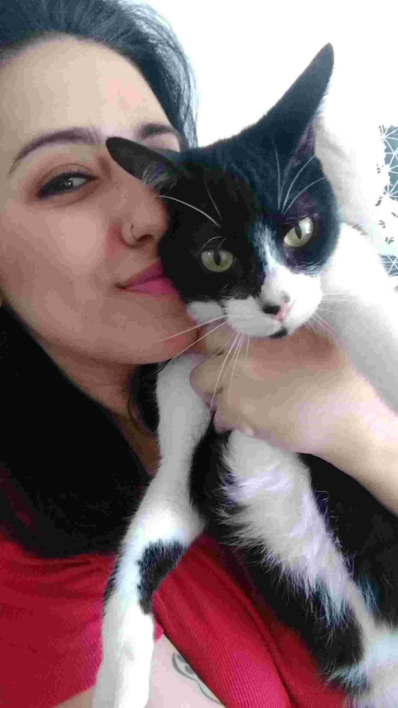

Meli y Ramón, una voluntaria de un refugio canino y un gato rescatado, desean que todos y cada uno de los animales abandonados consigan un hogar. De ese deseo nace esta página.
¿Porqué adoptar? Porque le das la oportunidad a un animal de tener una casa, y dejás el lugar a un callejerito para que podamos ayudarlo; además, no hay animal más agradecido que uno rescatado.